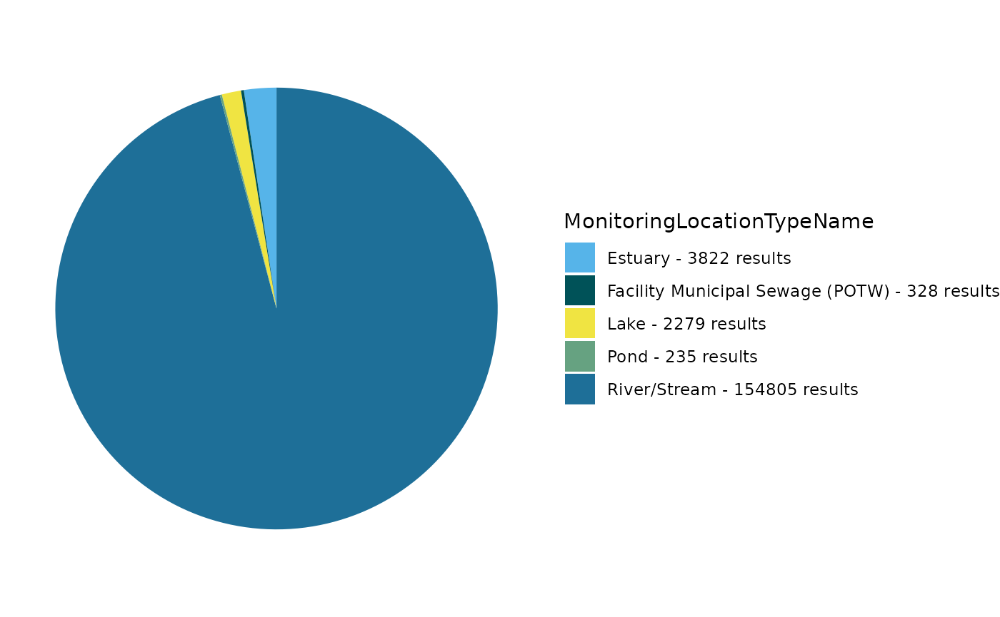
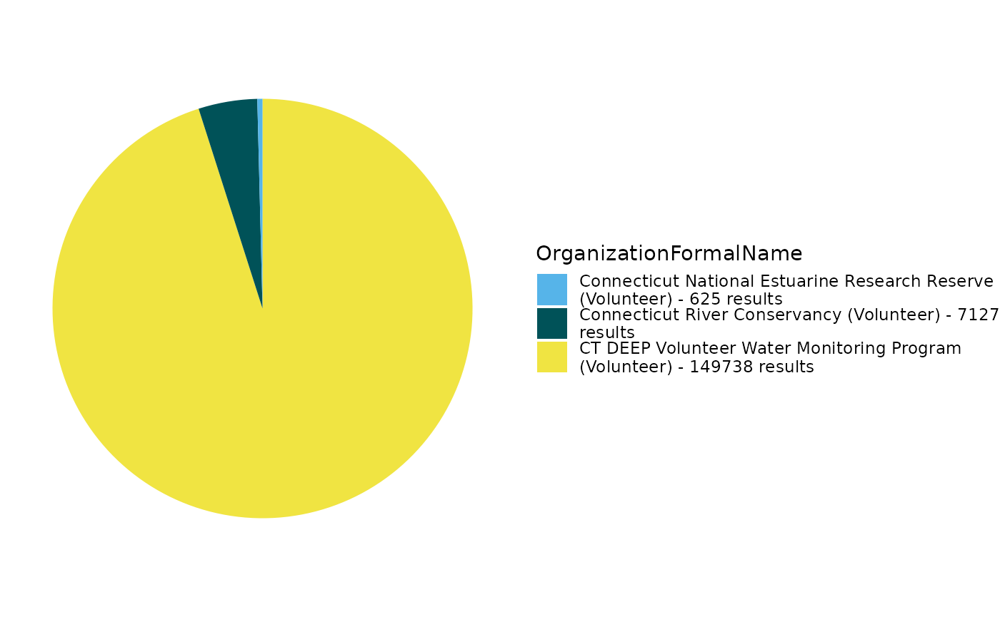
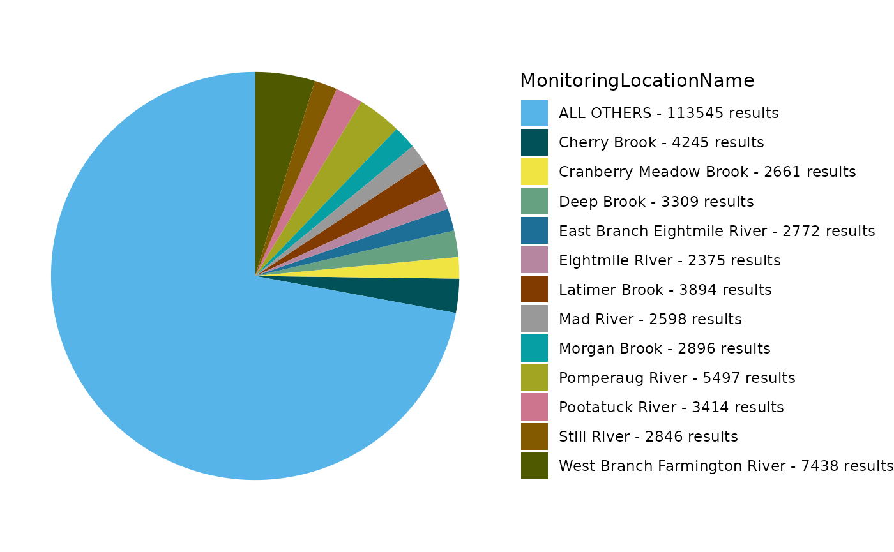

Participatory (Volunteer) Scientists are Monitoring Waters and Sharing Data via EPA's Water Quality eXchange (WQX)
TADA Team
2026-02-20
Source:vignettes/Participatory-Science-Water-Projects-in-WQX.Rmd
Participatory-Science-Water-Projects-in-WQX.RmdFind volunteer data in WQX
Let’s explore participatory
science water projects using the Water Quality eXchange (WQX), Water
Quality Portal (WQP), and the EPATADA R Package. To start, let’s find
volunteer monitoring organizations who have submitted data to EPA’s
Water Quality eXchange (WQX) by reviewing the organization
domain table available here.
# Get the WQX organizations domain
organizations <- read.csv(url("https://cdx.epa.gov/wqx/download/DomainValues/Organization.CSV"))
# Subset to include only "Volunteer" organizations and exclude WQX test/training orgs
volunteer_orgs <- subset(
organizations,
Type == "Volunteer" &
!grepl("training",
Name,
ignore.case = TRUE
) &
!grepl("test",
Name,
ignore.case = TRUE
) &
!grepl("\\*",
Name,
ignore.case = TRUE
)
)
unique(volunteer_orgs$Name)Generate a list of 5 random organization IDs:
random_volunteer_orgIDs <- sample(volunteer_orgs$ID, size = 5)Prepare list for use in TADA_DataRetrieval:
unlist(random_volunteer_orgIDs)Query the Water Quality Portal (WQP) using
TADA_DataRetrieval and the 5 random volunteer organizations
IDs. We will look for any data available from 2015 to present.
volunteer_data <- TADA_DataRetrieval(
startDate = "2015-01-01",
organization = random_volunteer_orgIDs,
ask = FALSE,
applyautoclean = TRUE
)Retrieve data from WQP
Alternatively, choose 5 volunteer monitoring organizations and query WQP. We will move forward with this example of volunteer organizations in CT:
selected_orgs <-
c(
"CONNRIVERCONSERVANCY",
"CT_NERR",
"BANTAMLAKE_WQX",
"CTVOLMON",
"CT_NERR"
)
volunteer_data <- EPATADA::TADA_DataRetrieval(
# startDate = "2022-01-01",
organization = selected_orgs,
ask = FALSE,
applyautoclean = TRUE
)## Checking what data is available. This may take a moment.## The number of sites and/or records matched by the query terms is large, so the download may take some time.## [1] "Downloading data from sites with fewer than 350000 results by grouping them together."
## | | | 0% | |= | 2% | |====== | 8% | |============= | 19% | |========================== | 37% | |=================================================================== | 95% | |======================================================================| 100%
## [1] "Data successfully downloaded. Running TADA_AutoClean function."
## [1] "TADA_Autoclean: creating TADA-specific columns."
## [1] "TADA_Autoclean: harmonizing dissolved oxygen characterisic name to DISSOLVED OXYGEN SATURATION if unit is % or % SATURATN."
## [1] "TADA_Autoclean: handling special characters and coverting TADA.ResultMeasureValue and TADA.DetectionQuantitationLimitMeasure.MeasureValue value fields to numeric."
## [1] "TADA_Autoclean: converting TADA.LatitudeMeasure and TADA.LongitudeMeasure fields to numeric."
## [1] "TADA_Autoclean: harmonizing synonymous unit names (m and meters) to m."
## [1] "TADA_Autoclean: updating deprecated (i.e. retired) characteristic names."
## [1] "No deprecated characteristic names found in dataset."
## [1] "TADA_Autoclean: harmonizing result and depth units."
## [1] "TADA_Autoclean: creating TADA.ComparableDataIdentifier field for use when generating visualizations and analyses."
## [1] "NOTE: This version of the TADA package is designed to work with numeric data with media name: 'WATER'. TADA_AutoClean does not currently remove (filter) data with non-water media types. If desired, the user must make this specification on their own outside of package functions. Example: dplyr::filter(.data, TADA.ActivityMediaName == 'WATER')"Explore and refine results
Review volunteer monitoring projects in WQX:
unique(volunteer_data$ProjectName)## [1] "Riffle Bioassessment by Volunteers Program"
## [2] "Volunteer Stream Temperature Monitoring Network"
## [3] "CRC and Affiliate Monitoring"
## [4] "Connecticut Lake Watch"
## [5] "CRC Cyanobacteria 2025"
## [6] "Ecoli2025"
## [7] "CRC 2019 Bacteria Monitoring"
## [8] "Chicopee Four Rivers Watershed Council 2019"
## [9] "Deerfield River Watershed Association 2019"
## [10] "Connecticut River Conservancy/Connecticut River Watershed Council 2012-2018"
## [11] "2019 Anguilla Brook Watershed Bacteria Source Trackdown"
## [12] "2012 Flat Brook Trackdown Survey"
## [13] "Connecticut River Conservancy 2020"
## [14] "Fort River Watershed Asssociation 2020"
## [15] "Deerfield River Watershed Association 2020"
## [16] "Chicopee 4River Watershed Council 2020"
## [17] "Pomperaug River Watershed Based Plan Implementation Groundwork: Additional Water Quality Monitoring, Agricultural Outreach, BMP Implementation Design and Landowner Agreements to Address Bacteria Impairments. EPA RFA No. 21059"
## [18] "Still River Watershed Pollution Trackdown Survey. CTDEEP Contract No. 17-06"
## [19] "Connecticut River Conservancy 2021"
## [20] "Chicopee 4 Rivers Watershed Council 2021"
## [21] "Deerfield River Watershed Association 2021"
## [22] "Connecticut River Conservancy 2022"
## [23] "Deerfield River Watershed Association 2022"
## [24] "Chicopee 4 Rivers Watershed Council 2022"
## [25] "Clean Up Sound & Harbors (CUSH) volunteer water monitoring program"
## [26] "CT Harbor Watch water monitoring program"Generate pie chart:
EPATADA::TADA_FieldValuesPie(volunteer_data, field = "MonitoringLocationTypeName")
Review and remove sites if coordinates are imprecise or outside US:
volunteer_data <- EPATADA::TADA_FlagCoordinates(volunteer_data,
clean_outsideUSA = "remove",
clean_imprecise = TRUE,
flaggedonly = FALSE
)Use TADA_OverviewMap to generate a map:
EPATADA::TADA_OverviewMap(volunteer_data)Review and remove duplicate results if present:
volunteer_data <- EPATADA::TADA_FindPotentialDuplicatesSingleOrg(volunteer_data)## [1] "TADA_FindPotentialDuplicatesSingleOrg: 355 groups of potentially duplicated results found in dataset. These have been placed into duplicate groups in the TADA.SingleOrgDupGroupID column and the function randomly selected one result from each group to represent a single, unduplicated value. Selected values are indicated in the TADA.SingleOrgDup.Flag as 'Unique', while duplicates are flagged as 'Duplicate' for easy filtering."
volunteer_data <- dplyr::filter(volunteer_data, TADA.SingleOrgDup.Flag == "Unique")Prepare censored (nondetects and overdetects) results for analysis:
volunteer_data <- EPATADA::TADA_SimpleCensoredMethods(
volunteer_data,
nd_method = "multiplier",
nd_multiplier = 0.5,
od_method = "as-is",
od_multiplier = "null"
)## [1] "TADA_IDCensoredData: 85 records in supplied dataset have conflicting detection condition and detection limit type information. These records will not be included in detection limit handling calculations."Run key TADA quality control flagging functions and remove suspect results:
volunteer_data <- EPATADA::TADA_RunKeyFlagFunctions(
volunteer_data,
clean = TRUE
)## [1] "TADA_FindQCActivities: Quality control samples have been removed or were not present in the input dataframe. Returning dataframe with TADA.ActivityType.Flag column for tracking."Flag results above and below thresholds. Review carefully and consider removing.
volunteer_data <- EPATADA::TADA_FlagAboveThreshold(volunteer_data,
clean = FALSE,
flaggedonly = FALSE
)## TADA_FlagAboveThreshold: Returning the dataframe with flags. Counts: NA - Not Available: 3556, Pass: 35322, Suspect: 723
volunteer_data <- EPATADA::TADA_FlagBelowThreshold(volunteer_data,
clean = FALSE,
flaggedonly = FALSE
)## TADA_FlagBelowThreshold: No data below the WQX Lower Threshold was found in your dataframe. Returning the input dataframe with TADA.ResultValueBelowLowerThreshold.Flag column for tracking. Counts: NA - Not Available: 3556, Pass: 36045Harmonize synonyms if found:
volunteer_data <- EPATADA::TADA_HarmonizeSynonyms(volunteer_data)Generate table:
EPATADA::TADA_FieldValuesTable(volunteer_data, field = "ActivityTypeCode")## Value Count
## 1 Sample-Routine 35904
## 2 Field Msr/Obs 3697Generate pie chart:
EPATADA::TADA_FieldValuesPie(volunteer_data, field = "OrganizationFormalName")
Generate pie chart:
EPATADA::TADA_FieldValuesPie(volunteer_data, field = "MonitoringLocationName")
Remove non-numeric results:
volunteer_data <- EPATADA::TADA_ConvertSpecialChars(
volunteer_data,
col = "TADA.ResultMeasureValue",
clean = TRUE
)Review the number of sites and records for each characteristic:
EPATADA::TADA_SummarizeColumn(volunteer_data)## # A tibble: 23 × 3
## TADA.CharacteristicName$TADA.CharacteristicName n_sites n_records
## <chr> <int> <int>
## 1 AMMONIA 15 244
## 2 CHLOROPHYLL A 4 144
## 3 CONDUCTANCE 15 149
## 4 COUNT 808 23121
## 5 DEPTH, SECCHI DISK DEPTH 41 474
## 6 DISSOLVED OXYGEN (DO) 15 589
## 7 ENTEROCOCCUS 15 117
## 8 ESCHERICHIA COLI 422 9294
## 9 FECAL COLIFORM 16 129
## 10 INORGANIC NITROGEN (NO2, NO3, & NH3) 15 269
## # ℹ 13 more rowsFilter data to review a single characteristic:
ecoli <- dplyr::filter(
volunteer_data,
TADA.ComparableDataIdentifier %in% c(
"ESCHERICHIA COLI_NA_NA_CFU/100ML"
)
)Generate scatter plot for E. coli:
EPATADA::TADA_GroupedScatterplot(ecoli)## [1] "TADA_GroupedScatterplot: No 'groups' selected for MonitoringLocationName. There are 247 MonitoringLocationNames in the TADA dataframe. The top four MonitoringLocationNames by number of results will be plotted: Sunderland Boat Ramp; CT River at Barton Cove Boat Ramp (now MA-CTR_122.5); DCR/UMASS boat dock and Oxbow/Easthampton Boat Ramp."Filter to a single site and continue exploring E. coli:
ecoli <- dplyr::filter(
ecoli,
TADA.MonitoringLocationIdentifier %in% c(
"CONNRIVERCONSERVANCY-OXE1"
)
)Let’s check if any results are above the EPA 304A recommended maximum criteria magnitude (see: 2012 Recreational Water Quality Criteria Fact Sheet).
![EPA 2012 recreational water quality criteria (RWQC) recommendations for protecting human health in all coastal and non-coastal waters designated for primary contact recreation use. EPA provides two sets of recommended criteria. The RWQC consist of three components: magnitude, duration and frequency. The magnitude of the bacterial indicators are described by both a geometric mean (GM) and a statistical threshold value (STV) for the bacteria samples. The waterbody GM should not be greater than the selected GM magnitude in any 30-day interval. The STV approximates the 90th percentile of the water quality distribution and is intended to be a value that should not be exceeded by more than 10 percent of the samples in the same 30-day interval. The table summarizes the magnitude component of the recommendations.](images/bacteria.png)
If interested, you can find other state, tribal, and EPA 304A criteria in EPA’s Criteria Search Tool.
Let’s check if any individual results exceed 320 CFU/100mL (the magnitude component of the EPA recommendation 2 criteria for ESCHERICHIA COLI).
# add column with comparison to criteria mag (excursions)
ecoli <- ecoli |>
dplyr::mutate(meets_criteria_mag = ifelse(TADA.ResultMeasureValue <= 320, "Yes", "No"))
# review subset
ecoli_subset_review <- ecoli |>
dplyr::select(
MonitoringLocationIdentifier, OrganizationFormalName, ActivityStartDate, TADA.ResultMeasureValue,
meets_criteria_mag
)
EPATADA::TADA_TableExport(ecoli_subset_review)Generate stats table. Review percentiles. Less than 5% of results fall above ~19 CFU/100mL and over 98% of results fall below ~2185 CFU/100m
EPATADA::TADA_TableExport(EPATADA::TADA_Stats(ecoli))Generate a scatterplot. One result value is above the threshold.
EPATADA::TADA_Scatterplot(ecoli, id_cols = "TADA.ComparableDataIdentifier") |>
plotly::add_lines(
y = 320,
x = c(min(ecoli$ActivityStartDate), max(ecoli$ActivityStartDate)),
inherit = FALSE,
showlegend = FALSE,
line = list(color = "red"),
hoverinfo = "none"
)Generate a histogram.
EPATADA::TADA_Histogram(ecoli, id_cols = "TADA.ComparableDataIdentifier")TADA_Boxplot can be useful for identifying skewness and
percentiles.
EPATADA::TADA_Boxplot(ecoli, id_cols = "TADA.ComparableDataIdentifier")Check out other example R workflows designed to work with WQP data under the Articles tab on the EPATADA package website.